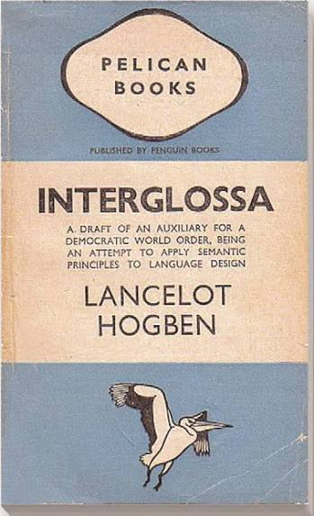

What is Interglossa?
Interglossa is a constructed auxiliary language created by Lancelot Hogben and published in 1943. It was designed as a simplified international language based largely on Greek and Latin roots.
Interglossa uses a relatively small vocabulary and simplified grammar. Its purpose was to facilitate communication between people speaking different natural languages.
